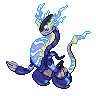

ミライドンのデータ
基本ステータス
もちもの・メダル・条件付き効果なし。割合の値は％です。待ち時間は短縮率、移動速度はゲーム内の値です。
| Lv | HP | 攻撃 | 防御 | 特攻 | 特防 | 移動速度 | 急所率 | 待ち時間 | HP吸収率 | 通常攻撃の速さ | 貫通 |
|---|---|---|---|---|---|---|---|---|---|---|---|
| 1 | 3300 | 140 | 70 | 100 | 80 | 3650 | 0 | 0 | 0 | 10 | 0 |
| 2 | 3442 | 147 | 79 | 132 | 87 | 3650 | 0 | 0 | 0 | 10.36 | 0 |
| 3 | 3599 | 154 | 89 | 167 | 95 | 3650 | 0 | 0 | 0 | 10.75 | 0 |
| 4 | 3771 | 162 | 100 | 206 | 104 | 3650 | 0 | 5 | 0 | 11.18 | 0 |
| 5 | 3960 | 171 | 112 | 248 | 113 | 3800 | 0 | 5 | 0 | 11.65 | 0 |
| 6 | 4168 | 181 | 125 | 295 | 123 | 3800 | 0 | 5 | 0 | 12.17 | 0 |
| 7 | 4397 | 192 | 139 | 347 | 134 | 3950 | 0 | 5 | 0 | 12.74 | 0 |
| 8 | 4649 | 204 | 155 | 404 | 147 | 3950 | 0 | 5 | 0 | 13.37 | 0 |
| 9 | 4927 | 217 | 172 | 467 | 161 | 4100 | 0 | 10 | 0 | 14.07 | 0 |
| 10 | 5234 | 232 | 191 | 536 | 176 | 4100 | 0 | 10 | 0 | 14.84 | 0 |
| 11 | 5572 | 248 | 212 | 612 | 193 | 4250 | 0 | 10 | 0 | 15.68 | 0 |
| 12 | 5944 | 266 | 235 | 696 | 212 | 4250 | 0 | 10 | 0 | 16.61 | 0 |
| 13 | 6353 | 285 | 261 | 788 | 232 | 4250 | 0 | 20 | 0 | 17.63 | 0 |
| 14 | 6804 | 306 | 289 | 889 | 255 | 4250 | 0 | 20 | 0 | 18.76 | 0 |
| 15 | 7300 | 330 | 320 | 1000 | 280 | 4250 | 0 | 20 | 0 | 20 | 0 |

ミライドン急所・HP吸収などの仕様
急所の対象は通常攻撃です。 基本の急所率は全レベル0%です。
通常攻撃
効果・条件の説明
強化攻撃はありません。
わざ1
でんきショック
効果・条件の説明
指定方向へ電撃を放ち、直線上を攻撃します。
チャージビーム
効果・条件の説明
力をためて電気のビームを放ちます。相手に当たると特攻が上がり、電気を蓄えます。
無敵・妨害への耐性
強化されたチャージビームを放ち続ける間は妨害耐性になります。妨害無効ではありません。
通常版の効果・条件
命中すると特攻が6秒間10%上がり、最大2段階まで重なります。短い間に2回命中すると、最大10秒間使える強化ビームになります。強化ビームを撃ちながら移動できますが、向きは変えられません。最大2回分を蓄えられ、連続使用には1秒の間隔が必要です。
チャージビーム+
効果・条件の説明
強化後の変更点：保有回数の回復時間が0.5秒短くなります。
無敵・妨害への耐性
強化されたチャージビームを放ち続ける間は妨害耐性になります。妨害無効ではありません。
通常版の効果・条件
命中すると特攻が6秒間10%上がり、最大2段階まで重なります。短い間に2回命中すると、最大10秒間使える強化ビームになります。強化ビームを撃ちながら移動できますが、向きは変えられません。最大2回分を蓄えられ、連続使用には1秒の間隔が必要です。
イナズマドライブ
効果・条件の説明
回転しながら突進し、通り道の相手を攻撃します。命中すると電気を蓄えます。
通常版の効果・条件
短い間に2回命中すると、最大10秒間、指定した相手へ突進する強化版を使えます。相手のHPが50%未満なら強化版のダメージが増えます。使用中は妨害耐性を得ます。最大2回分を蓄えられ、連続使用には1秒の間隔が必要です。
イナズマドライブ+
効果・条件の説明
強化後の変更点：保有回数の回復時間が4秒短くなります。
通常版の効果・条件
短い間に2回命中すると、最大10秒間、指定した相手へ突進する強化版を使えます。相手のHPが50%未満なら強化版のダメージが増えます。使用中は妨害耐性を得ます。最大2回分を蓄えられ、連続使用には1秒の間隔が必要です。
わざ2
でんじは
効果・条件の説明
指定した相手を電撃で攻撃し、まひさせます。
効果・条件
まひは2秒間で、相手の移動速度を30%、通常攻撃速度を10%下げます。
かみなり
効果・条件の説明
近くの相手へ近づく雲を作り、繰り返し雷を落とします。
通常版の効果・条件
雲は2.5秒間、0.5秒ごとに雷を落とします。雷が命中した相手の移動速度を10%下げます。
かみなり+
効果・条件の説明
強化後の変更点：相手の移動速度低下が20%になります。
通常版の効果・条件
雲は2.5秒間、0.5秒ごとに雷を落とします。雷が命中した相手の移動速度を10%下げます。
パラボラチャージ
効果・条件の説明
周囲へ電気を流して相手を減速させ、命中すると自分のHPを回復します。
通常版の効果・条件
相手の移動速度を2秒間50%下げます。命中すると「チャージビーム」か「イナズマドライブ」の保有回数が1回復します。
パラボラチャージ+
効果・条件の説明
強化後の変更点：使用すると、最大HPの10%のシールドを獲得します。
通常版の効果・条件
相手の移動速度を2秒間50%下げます。命中すると「チャージビーム」か「イナズマドライブ」の保有回数が1回復します。
ユナイトわざ
ユナイトわざ使用後の共通強化
移動速度30%上昇、わざの待ち時間短縮30%、最大HPの20%のシールド（6秒）
未来照らす流星
効果・条件の説明
妨害への耐性を得て、指定した場所へ隕石を最大5回落とします。
効果・条件
隕石を命中させるごとに、以降の隕石のダメージが20%ずつ増えます。前の4回すべてを当てた場合、最後の隕石は最大80%強まります。最後は範囲が広がり、命中した相手を1秒間吹き飛ばします。ユナイトわざ使用時の効果は、最初の隕石を呼ぶときに発動します。